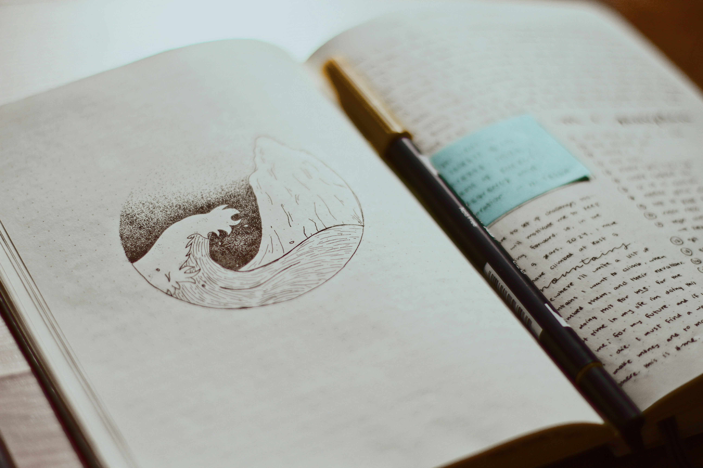
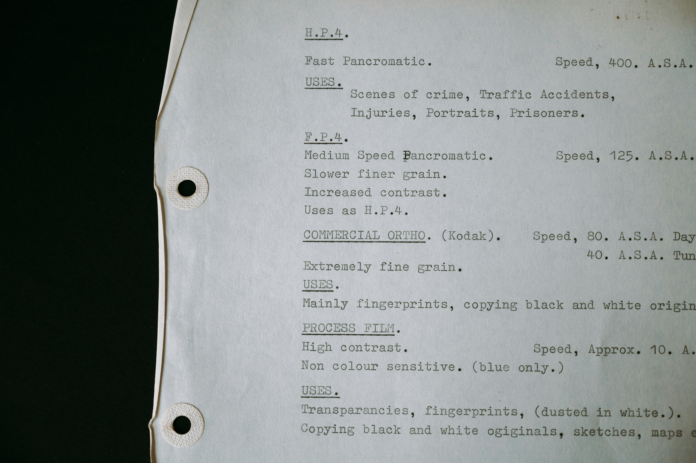

Literary Arts

“Ποίησις,” the act of creating, is central to our goal. We aim to explore how the arts deepen thinking and learning, and to develop methods to ensure that creativity, expression, and storytelling are placed at the center of education.


